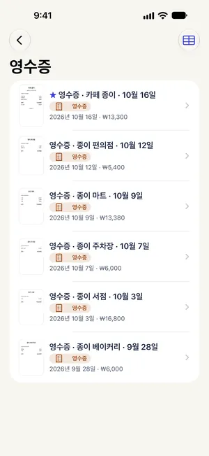

영수증 엑셀로 정리하기 (경비 정산용 CSV 만들기)
최종 수정 2026-10-22 · Paperkeep Pro 기능
한 달 치 영수증 금액을 엑셀에 하나씩 옮겨 적는 일은 생각보다 오래 걸려요. Paperkeep Pro의 'CSV 내보내기'는 고른 기간의 영수증을 한 장에 한 줄씩, 날짜·가게·합계·통화가 담긴 표 파일로 만들어 줘요. 파일은 공유하는 순간에만 만들어지고, 받을 곳은 직접 골라요.
먼저, iOS 기본 기능으로 하는 방법
- iOS 기본 앱에는 영수증 사진에서 금액을 뽑아 표로 만드는 기능이 없어요.
- Numbers 앱에 날짜·가게·금액 열을 만들고, 스캔해 둔 영수증을 보면서 직접 입력하는 게 기본 앱으로 할 수 있는 가장 확실한 방법이에요.
- 입력을 마치면 Numbers의 내보내기 기능으로 Excel이나 CSV 파일을 만들 수 있어요.
Paperkeep으로 하는 방법
- 먼저 영수증을 스캔해 두세요. CSV에는 Paperkeep이 '영수증'으로 분류한 문서만 들어가요.
- '영수증' 스마트 폴더로 들어가요(첫 화면 '스마트 폴더' 아래에 있어요).
- 오른쪽 위 표 모양의 'CSV 내보내기' 버튼을 눌러요.
- '영수증 CSV' 화면의 '시작'과 '끝'에서 정산할 기간을 정해요.
- '공유'를 누르고, 공유 시트에서 메일을 골라 경리 담당자에게 보내거나 '파일에 저장'으로 보관한 뒤 Numbers나 Excel에서 열어요.

이 문서만의 팁
- CSV의 금액은 Paperkeep이 읽은 합계예요. 제출 전에 비어 있거나 이상한 줄은 해당 영수증 이미지로 확인해 고치세요.
- 영수증으로 분류되지 않은 스캔은 문서 화면의 '종류'에서 '영수증'으로 바꿔야 CSV에 들어가요.
- 통화가 따로 한 열로 나오니, 출장에서 원화와 엔화, 달러가 섞여도 구분하기 쉬워요.
곧 App Store에 출시돼요.